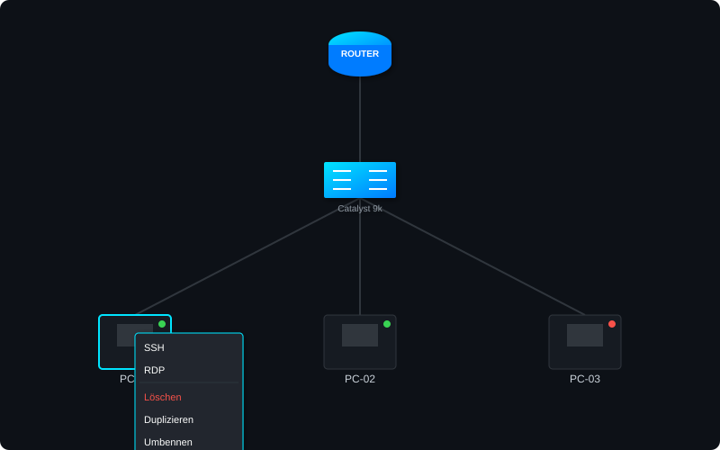

Netzwerk-Infrastruktur
endlich sichtbar.
Automatisierte Layer-1 Topologie-Erkennung für Cisco-Umgebungen. Schnell, sicher und lokal.
Die intuitive Schaltzentrale
Erleben Sie, wie NetTopology Live Ihre Switches und Router in Echtzeit scannt und ein präzises Abbild Ihrer physischen Verkabelung erstellt.
- Rechtsklick-Menü: Starten Sie SSH oder RDP direkt aus dem Diagramm.
- Live-Status: Uptime-Monitoring für alle verbundenen Teilnehmer.
- Flexibilität: Nodes händisch hinzufügen, löschen oder für die Ansicht filtern.

Einfache Preisgestaltung
Wählen Sie den passenden Plan für Ihre Infrastruktur.
Community
0€
Dauerhaft kostenlos
- Bis zu 5 Geräte
- Manuelle Topologie
- SSH Integration
- Community Support
Empfohlen
Pro Edition
ab 249€
Einmalige Lizenzgebühr
- Unlimitierte Geräte
- Auto-Discovery (Layer-1)
- SSH & RDP Integration
- 1 Jahr Support & Updates